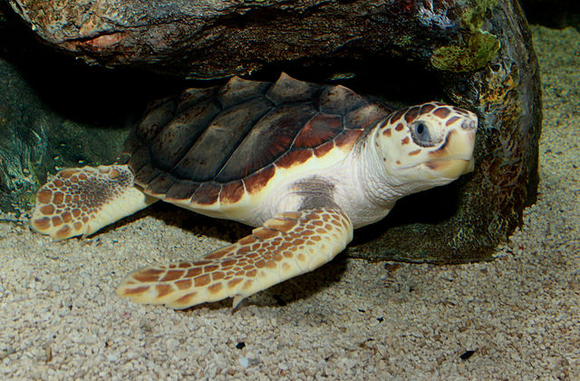

Spiny Bush Viper
Atheris hispida
The males of this species grow to maximum total length of 73 cm (29 in): body 58 cm (23 in), tail 15 cm (5.9 in). Females grow to a maximum total length of 58 cm (23 in). The males are surprisingly long and slender compared to the females. This species is capable of climbing reeds and stalks, and is often found basking on top of flowers and terminal leaves.

Loggerhead Sea Turtle
Caretta caretta
The loggerhead sea turtle is the world's largest hard-shelled turtle. Adults have an average weight range of 80 to 200 kg (180 to 440 lb) and a length range of 70 to 95 cm (28 to 37 in). The head and carapace (upper shell) range from a yellow-orange to a reddish-brown, while the plastron (underside) is typically pale yellow.The turtle's neck and sides are brown on the tops and yellow on the sides and bottom.
